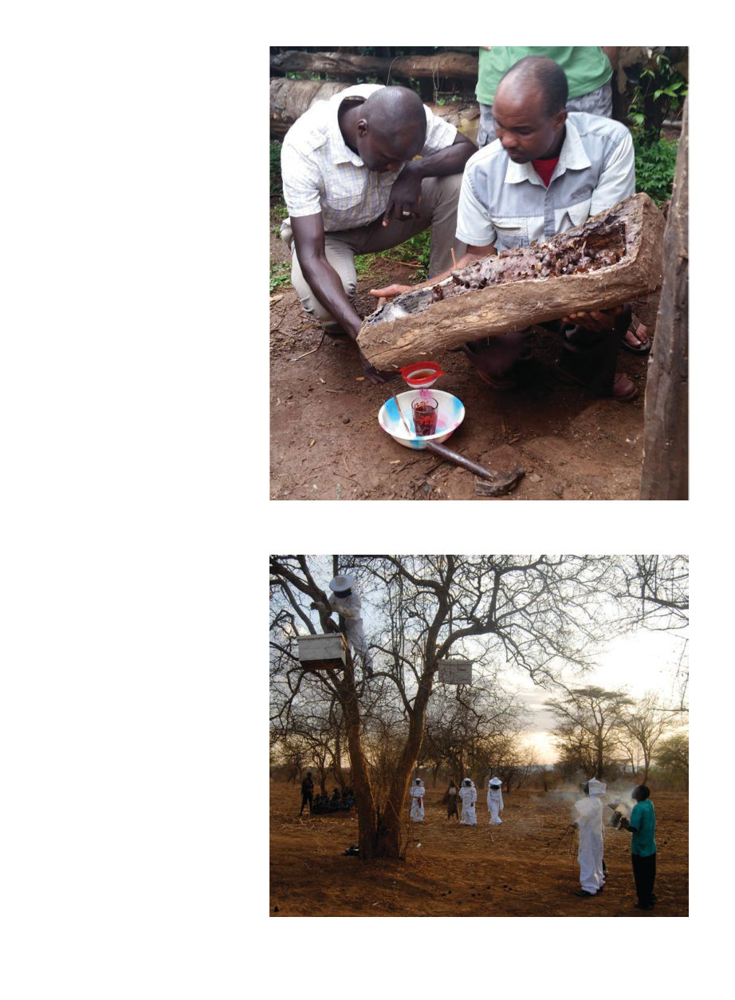

January 2021
99
At times like this I would contemplate
how this scene could be 100,000 B.C.
The day the government officials
were supposed to collect us, I was
pleasantly surprised to find that they
did indeed arrive. They took us back
to Singida, where I learned Dr. Kone
was in Dar Es Salaam on the coast, so
we took a twelve-hour bus to meet
him there. I had planned to go from
there to meet with a beekeeping co-
operative on the Zanzibar islands, but
Dr. Kone advised me it would be very
unstable there with the election that
was about to take place, so instead I
took buses a thousand miles to Kam-
pala, Uganda, to meet with a local aid
organization there that had requested
assistance in beekeeping. But that,
clearly, is another story.
Meanwhile in the Hadza village
of Kipamba, Maasai Honey was able
to base a full-time beekeeper named
Zombe starting in 2016 and continu-
ing for 18 months, to provide com-
prehensive training and guidance.
Kipamba village now produces an
excellent crop of honey both for their
own consumption and sale through
Maasai Honey. Their most recent crop
was thirty 5-gallon buckets of honey,
enough to make a significant impact
on their small economy.
Krysten Ericson began Maasai
Honey in 2008 after seeing the lack of
opportunity faced by women of the
Ololosokwan Village on the edge of
the Serengeti in northern Tanzania.
She enlisted local community mem-
bers and organized training from
experienced beekeepers in the re-
gion, and in 2010 the Maasai Honey
program began. They built a certified
production facility in Ololosokwan
Village and a retail outlet in the near-
est larger town, Arusha, in addition
to selling much of their honey to safa-
ri lodges in the region, and, of course,
maintaining the support connection
to Kipamba. At present they are train-
ing 11 women, and have 4 staff mem-
bers in the village and 3 in Arusha.
Krysten reports that coronavirus has
really severely impacted sales. Not
only the honey sales, but much of the
Arusha economy is related to safari
tourism so the area has been hit hard
economically.
Bee Aid International (beedev.org)
still exists and donations collected
are being saved up until I or another
qualified person can travel to the sites
in Uganda, which I may write about
in a later article. I haven’t learned my
lesson and have started another Go-
FundMe campaign, this time to raise
The stingless hives have a removable top. One breaks the honey “pots,” and tilts it
so the honey (which isn’t very viscous) will flow through a hole at one end, through a
simple filter, to be collected.
Climbing the acacia to bring hives down for an evening inspection